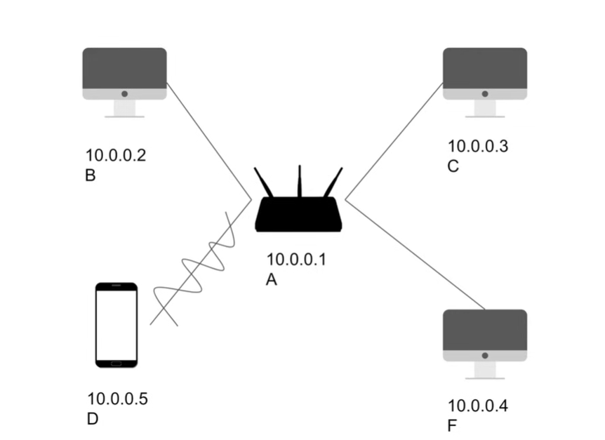
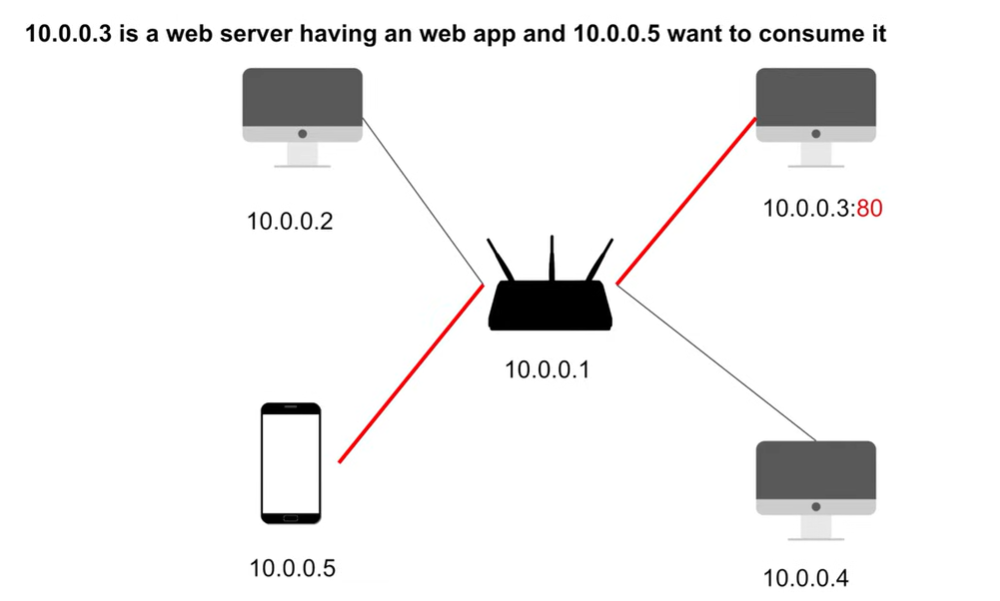
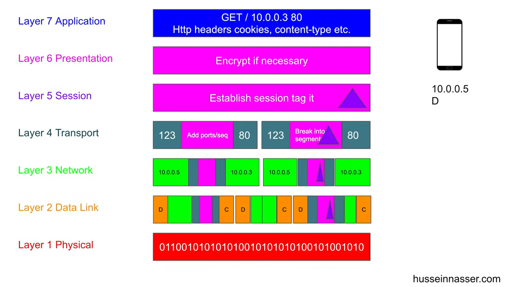

OSI model
OSI model is a conceptual framework to understand how the network communication between two machine works. These machines can be brower and server or server and server. But the model stays the same.
So GET request starts from the browser towards 111.168.0.1:80 includes headers, cookies, this is application layer(layer 7).
Then comes the presentation layer that encrypts if the encryption is enabled like with https protocol.
Then comes the session layer, this is where session tags are added, this is how it is modeled in the OSI model but it is encrypted too. Now session tag means these can be things like cookie or jwt tokens. That is used by statelesss server to identify request.
But for the first time when request is sent there will not be any cookie, the cookie will be return by server and then browser will send it back with every request.
After session layer comes the transport layer this is where connection is opened. And encrypted payload is broken down into segments. Each segment contains the source and destination port.
Next comes the session network layer, that adds the destination and source IP and groups segements into packets. Then comes the data link layer, that adds the mac addressess for next hop. and current one which is router that your machine is using. And this layer adds the frames.
Then comes the physical layer this is where everything gets turned into binary signals and sent over the wires and other mediums. Now current has no direction that means your frames get sent all over the world to the machine that even aren't intended recepient. But they refuse the message, this is the job of network card.
You source and destination ip remains same. But there maybe lots of hops(intermediary nodes between u and destination) those remove the frame. Use routing table to get information of next machine's mac address. Source takes the address of the current hop here and destination take the mac address o the next hop/final destination whichever is closer.
So finally when frames reach the final destination, now frames are converted to packets, then segments and decrepted and this is how it reaches the destination.
Now when server wants to send a response, it sends that using the source IP that tells where the request came from and the same process is repeated again through the hops if there are any. LAN of course won't have any hops.
When request leaves from browser u may have private IP but router adds the public ip of router to the frame so this is how server would know where to send back response.
Media Access Control(MAC): Is a unique address that identifies your machine in LAN. Public IP: is what that uniquely identifies you machine/router globally.
Have a look at the images below.



Example of end to end communication between server and client:
Session layer has become obsolete that is why there is no mention of that here. And cookies and jwt tokens belong to appliction layer
GET /api/users HTTP/1.1
Host: api.example.com
Authorization: Bearer xyz...
```
**2. TLS Encryption (Between Layers):**
```
Encrypt entire HTTP request using TLS
Result: Encrypted blob (unreadable)
```
**3. TCP (Layer 4 - Transport):**
```
Break encrypted blob into segments
Add TCP headers:
- Source port: 54321 (random high port)
- Dest port: 443 (HTTPS)
- Sequence numbers for ordering
```
**4. IP (Layer 3 - Network):**
```
Add IP headers:
- Source IP: 192.168.1.100 (your private IP)
- Dest IP: 93.184.216.34 (server public IP)
- TTL: 64 <-- this is maximum number of routers a **packet** is allowed to pass through
```
**5. Ethernet (Layer 2 - Data Link):**
```
Add Ethernet frame:
- Source MAC: Your NIC
- Dest MAC: Router's MAC (next hop)
```
**6. Physical (Layer 1):**
```
Convert to electrical signals
Send over Ethernet cable to router
```
---
### **Router (NAT - Network Address Translation):**
**Your statement about router adding public IP is CORRECT!**
```
Your machine: Private IP 192.168.1.100
Router: Public IP 203.0.113.50
Router's NAT table:
┌────────────────────┬───────────────────────┐
│ Internal │ External │
├────────────────────┼───────────────────────┤
│ 192.168.1.100:54321│ 203.0.113.50:12345 │
└────────────────────┴───────────────────────┘
Outgoing packet:
Source: 192.168.1.100:54321 → 203.0.113.50:12345
Dest: 93.184.216.34:443 (unchanged)
Server sees:
Source: 203.0.113.50:12345 (router's public IP)
Dest: 93.184.216.34:443
```
**This is why server responds to router's public IP, not your private IP.**
---
### **Multiple Hops:**
**Your statement is CORRECT!**
```
Hop 1: Your router (192.168.1.1)
- Receive frame with your MAC
- Extract IP packet
- Look up routing table: forward to ISP
- Build new frame with ISP router's MAC
- Forward
Hop 2: ISP router (10.0.0.1)
- Receive frame
- Extract IP packet
- Routing table: forward to backbone router
- New frame, forward
... (5-15 hops typical)
Final Hop: Server's router
- Receive frame
- Extract IP packet (dest: 93.184.216.34)
- "That's me!"
- Send to server's NIC
```
**Key insight you got RIGHT:**
- IP addresses (source/dest) stay the same across all hops
- MAC addresses change at every hop (next hop's MAC)
---
### **Response Journey:**
```
Server builds response:
HTTP/1.1 200 OK
Content-Type: application/json
Set-Cookie: session=abc123
{"users": [...]}
```
**Wrap in layers (reverse):**
```
TLS: Encrypt response
TCP: Segment encrypted data
Source port: 443 (server)
Dest port: 12345 (router's NAT port)
IP: Add headers
Source: 93.184.216.34 (server)
Dest: 203.0.113.50 (router's public IP)
Ethernet: Add frame headers
Physical: Send
```
**Router receives response:**
```
NAT table lookup:
External port 12345 → Internal 192.168.1.100:54321
Rewrite packet:
Dest: 203.0.113.50:12345 → 192.168.1.100:54321
Forward to your machine
```
**Your machine:**
```
Layer 1: Receive electrical signals
Layer 2: Extract frame (MAC matches, accept)
Layer 3: Extract IP packet (IP matches, accept)
Layer 4: TCP reassembles segments
TLS: Decrypt payload
Layer 7: Browser receives HTTP response